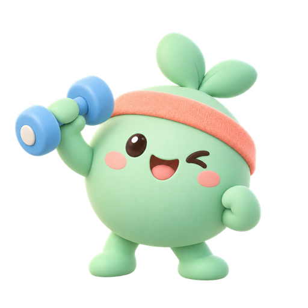
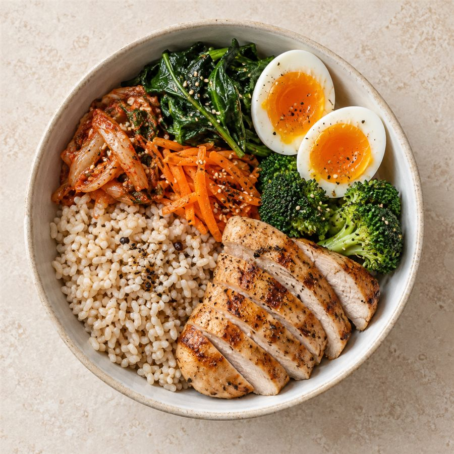

안녕하세요!
천천히, 오늘 할 만큼만 해봐요!

오늘의 영양
0 kcal / 2,200
천천히, 오늘 할 만큼만 해봐요!

오늘 운동 기록
오늘 식단

최근 4주 리포트
설정과 데이터
🔒 기록은 이 기기에만 저장돼요. 회원가입이나 서버가 없어서 운동·식단·신체 기록이 외부로 전송되지 않아요. 브라우저 데이터를 지우거나 기기를 바꾸면 기록이 사라지니 백업 파일 받기로 주기적으로 보관해 주세요.
🩺 건강 정보 안내 칼로리·목표·리포트는 일반적인 공식에 따른 추정치이며 의학적 진단이나 처방이 아니에요. 성장기 청소년, 임신·수유 중이거나 질환·부상이 있다면 운동과 식단을 바꾸기 전에 전문가와 상담하세요.